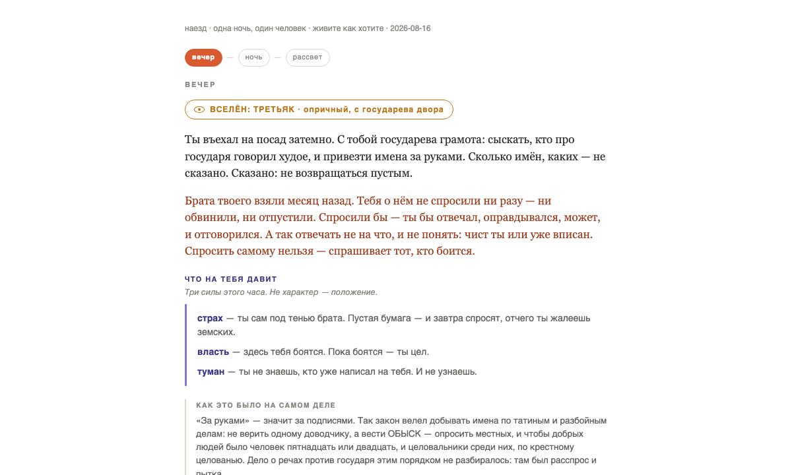

Живите как хотите
в работеТы проживаешь людей одного места по очереди. То, что решил первым, доходит до второго слухом: искажённым на шаг, и твоего имени в нём уже нет. Дальше ты — тот, до кого оно дошло. Искажает одно постоянное правило, и никакой языковой модели в этом нет.
Один поступок, три взгляда на него

Искажение — одно постоянное правило, которое держит движок, а не приём сценариста и не импровизация модели. Через двенадцать лет последний въезжает с той же бумагой, что была у первого, и помнит начало искажённо.
Две формы, обе собраны и сыграны
Какой из двух станет игрой — ещё не решено. Правило решения записано и оно короткое: сыграть и сказать, тянет или нет. Не тянет — форма отбрасывается целиком за вечер, и никакая новая механика её спасать не приходит.

Чего здесь намеренно нет
Откуда взялась форма
Оба разобраны одинаково: сперва механика, потом смысл, потом чем за него заплачено. Цепь выросла из этого чтения, а не из желания придумать новую механику.
Журнал
На следующий день после первой собрана вторая форма: одно тело вместо четырёх, одна ночь в трёх тактах. Цепь показывает, как поступок идёт между людьми; наезд — как одна ночь давит на одного человека. Обе остаются, пока не сыграны — по правилу выбор делается игрой, а не спором.
Предмет решён: ты внутри одной судьбы, а не снаружи со следственной папкой. «Разгадать чужую душу» закрыто. Причина простая: как только у игрока появляется ответ, который он сдаёт, игра превращается в анкету — сколько слова ни улучшай.
Перегиб с психологией. Движок по-прежнему работает на нужде и рубце, но этот словарь на экран не выходит. Одна строка печатала, как человек прочёл чужой жест, — и человек становился разобранным механизмом. Наружу идёт только бытовое последствие назавтра.
Рубец — это биография, а не категория. У каждого появились три конкретные истории, у каждой истории своя вещь в кадре. Две женщины с одной раной перестали говорить одной фразой, а число дел выросло с двадцати пяти до семидесяти пяти.
Настольная форма — кого позвать, кто где сядет — была собрана, сыграна и отброшена. Пятеро по строке за такт дают стену текста, где ничего не выделено. Хуже того, не было видно, что изменилось от твоего решения.
Солвер прогнали против генератора дел, чтобы выяснить, разрешимы ли они вообще. Наблюдение за манерой удваивает шансы, провокация утраивает: 24 → 48 → 84 процента. Дела, не прошедшие солвер, до игрока не доходят.